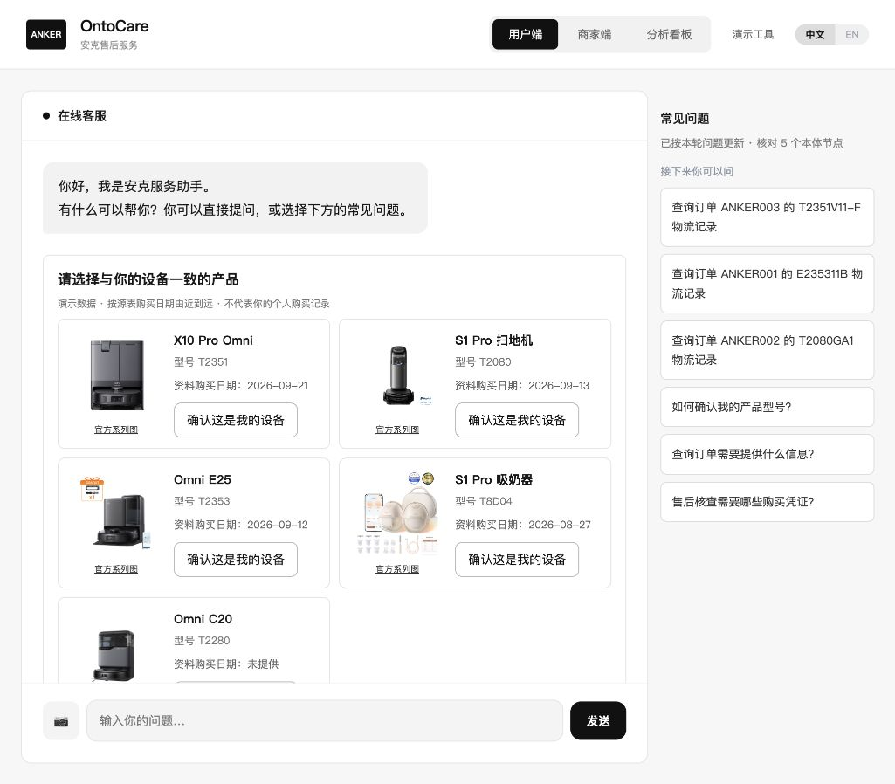
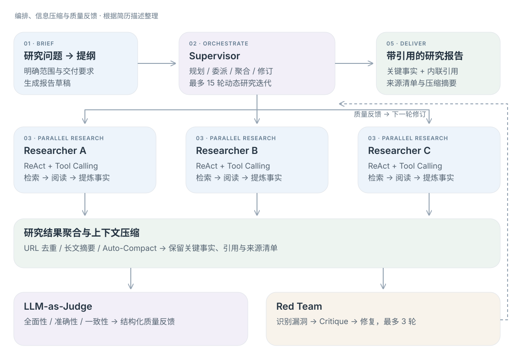
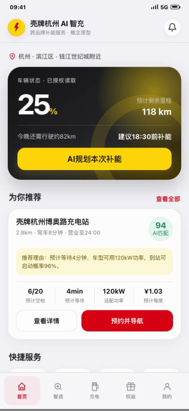

把需求说清楚
市场调研、场景拆解、约束与验收
理解问题 → 构建方案 → 验证效果 → 推进落地。
点击项目，查看架构、产品界面和具体工作。

01复杂售后、双本体与证据追溯

02研究编排、上下文与质量反馈

03用户场景、交互原型与商业试点
 04
04市场研究、用户分析与价值链测算
市场调研、场景拆解、约束与验收
Python、Agent 编排、交互 Demo
Bad Case、证据链、评测与回归
方案材料、GTM 测算、团队路演
Persona 多轮对抗发现问题，硬性断言检查业务约束，LLM-as-Judge 补充语义判断；再将问题归因到检索、状态、规则或表达。
时延来自历史进程内测试与真实接口调用，不含浏览器。通过率为任务单轮硬断言指标，不等于生产解决率；“自进化”指有人审参与的改进流程。
从用户求助与商家处理两端拆解服务流程，明确实体、证据、规则、模型与人工的职责，将产品消歧、订单候选、排障与引用串联起来。
围绕完整 MVP 协调后端、前端与评测工作，准备可体验的系统、可复查的材料和路演讲述。个人重点为方案架构、产品设计及答辩。
Service + Decision 双本体关联产品、订单、知识和业务条件。当前主链路采用 JSON 关系、Python 规则与型号限定检索。
围绕四类候选归因规则组织核查建议，通过 ReadOntology 与 ReadTrace 连接业务实体、规则和工单原文，保留证据下钻入口。
候选归因是核查线索。历史路演架构中的规划能力与当前实现范围，详见仓库说明。
“S1 Pro 不吸了”可能指向不同品类。先识别对象与已有上下文，再限定知识范围，减少跨型号回答。
模型组织语言；规则计算业务条件。答复保留引用，经营建议关联工单、规则 ID 与源表行号。
在时间约束内做出可体验 MVP，并为故障定位、回归测试与现场讲解留出时间。
与岗位的连接 客户需求拆解 · Agent 方案支持 · 日常问题定位 · Bad Case 反馈 · 跨角色交付
围绕长链路研究中的上下文退化、信息冗余和报告可靠性，实践多 Agent 协作、红队审查与迭代降噪。
DeepResearch Bench 抽样测试的简历记录如下；单任务平均耗时约 16 分钟。
分数与耗时依据简历记录；当前未附原始评测报告、样本量与模型配置。不同测试集和评测版本不作榜单排名比较。
Tavily 网页检索与 URL 去重，先整理来源，再将长文提炼为与任务相关的事实。
Auto-Compact 减少上下文冗余，保留关键事实、内联引用和来源清单，降低长链路信息干扰。
LLM Judge 给出结构化质量反馈；Red Team 识别漏洞，将 Critique 注入后续修复与报告迭代。
与岗位的连接 Multi-Agent 编排实践 · Coding 辅助实现 · 工具调用 · 上下文工程 · 模型输出质量判断
实地调研充电场站，围绕排队不确定、利用率不均、故障停机与峰值电费，设计“车 · 网 · 碳”一体化能源管理方案。
团队原型截图 · 点击放大
当前为学生竞赛交互原型，使用演示数据；预测、调度与因果增量模块为方案及试点设计。
每站每年 SaaS 服务费
经核验增量经营收益分成
先验证可交付性，再讨论扩展
车主需要补能确定性，运营人员需要可执行建议，经营方关注增量利润，IT 与安全团队参与接入和验收。
规划 Uplift 因果增量实验与 A/B 测试，观察到站转化、30 天复充、MTTR 与增量 ROI。
结合行业信息、竞品和场站调研整理方案，用 HTML Demo 演示用户路径，作为队长统筹团队路演。
收费与收益为团队商业方案及情景测算，不代表已签约订单、上线收益或实际试点结果。
与岗位的连接 客户初次交流 · 需求到方案的转译 · Demo 展示 · 商业价值表达 · 试点指标与团队协作
AI 智能戒指 BU · 海外 GTM 实习生。围绕海外用户、竞品、价格与渠道，整理定位方案和商业测算，以 HTML 网页汇报研究。

整合报告、电商平台、评论与竞品数据，挖掘运动健康诉求、价格区间和渠道偏好，形成三类分层画像及差异化定位方案。
搭建价值链量化测算模型，围绕订单规模、FOB / DAP 与返利方案做情景模拟和敏感性分析，支持定价与渠道选择。
将复杂研究整理为可交互 HTML 看板，帮助讨论研究过程、定位假设与上市策略。
从分散评论中提炼用户在意的功能、痛点、价格与购买条件，形成可讨论的用户分层。
把产品成本、订单规模、贸易条款与渠道返利放在同一价值链中，比较方案对利润空间的影响。
用结构化看板让业务负责人快速浏览结论、查看依据，并对待验证问题继续讨论。
与岗位的连接 市场侧需求汇总 · GTM 材料与策略 · 产品价值表达 · 连接业务约束与方案选择
三篇论文分别对应政策激励、资源约束与视觉识别。下图展示方法结构，实验结论与个人贡献分开说明。
比较 On-capacity 与 On-grid 补贴，分析激励结构如何影响高质量储能设施采用。
简历标注“学生一作”；期刊署名次序与学生作者排序分别理解。简历记录：SSCI Q1，IF 9.3（按简历口径保留，影响因子随年度变化）。
论文正式署名第 4 作者；公开 CRediT：Investigation、Validation。
研究资料与解读以浙江省 90 个区县为研究对象，构建数据驱动互补发展框架，形成资源约束下的分层政策建议。
简历标注“通讯作者”；正式发表材料为共同通讯作者。简历记录：SCIE Q1，IF 12.1（按简历口径保留，影响因子随年度变化）。
共同通讯作者；公开 CRediT：Data curation、Writing – original draft。
研究资料与解读融合 DRN 与随机森林建模视觉特征，论文报告准确率 94.2%；将数据组织、实验管理与可视化连接起来。
简历标注“学生二作”；期刊署名次序与学生作者排序分别理解。94.2% 为论文实验结果，非本页面重新训练所得。简历记录：SCIE Q2，IF 2.8（按简历口径保留）。
论文正式署名第 3 作者；公开 CRediT 包括数据整理、实验管理、可视化和论文撰写等。
研究资料与解读系统思维与优化训练，连接数据分析、用户需求和工程实现。以下信息依据简历整理。
数据与信息研究院 · 物流工程与管理
全日制硕士 · 保研
全额奖学金交流生
健行荣誉学院 · 工业工程 · 工学学士
专业前 1%
2023 年高教社杯全国大学生数学建模竞赛 · 赛区一等奖 · 队长
硕士课题：基于时序大模型预测后优化框架的跨境电商品仓部署问题研究。
依据本次提供的 JD，聚焦方案支持、模型应用工程与 GTM 三类工作。
把目标、使用场景、约束和验收指标问清楚，再用 Demo 和架构图帮助客户、产品与技术团队对齐。壳牌与 OntoCare 提供了具体实践。
查看产品方案案例 →用 Python、工具调用和工作流编排构建原型；用来源、Trace 和评测记录定位问题，把 Bad Case 转为可行动的反馈。
查看 Agent 与评测案例 →整理市场需求和常见问题，形成 GTM 材料、商业情景与试点计划；将市场侧信息反馈到产品讨论中。追觅实习是这部分的直接经验。
查看 GTM 实习案例 →